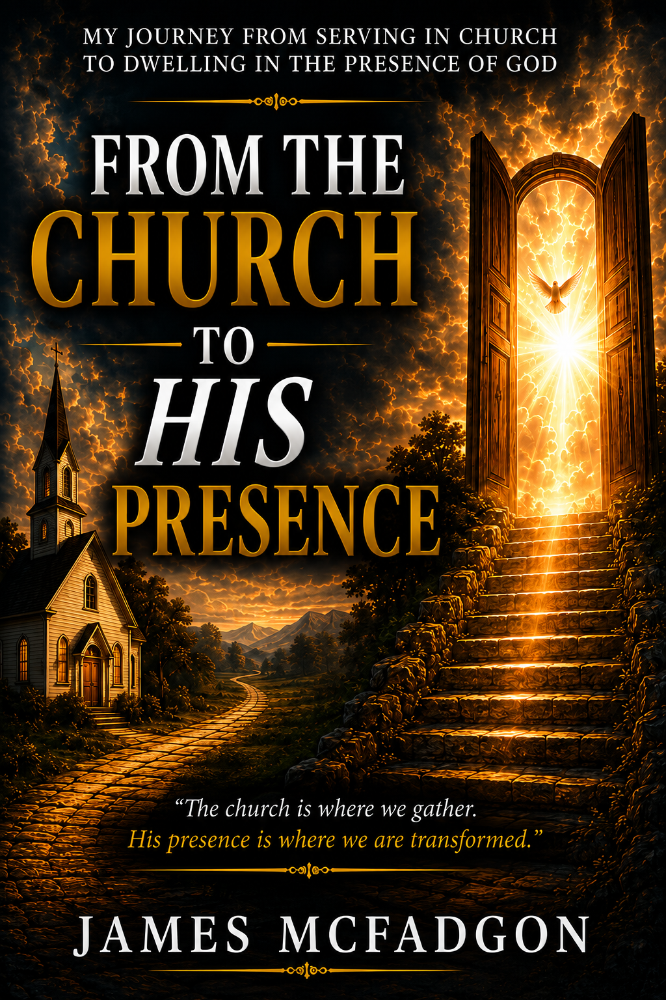
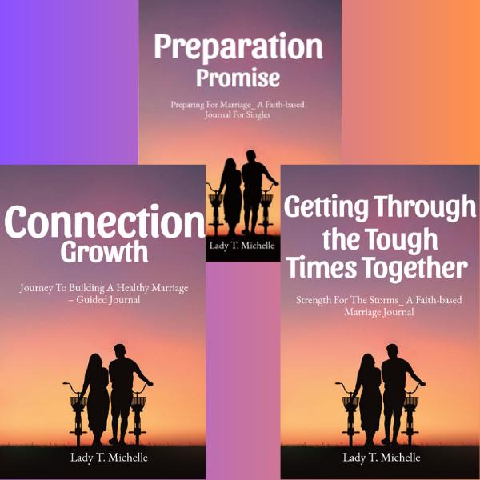
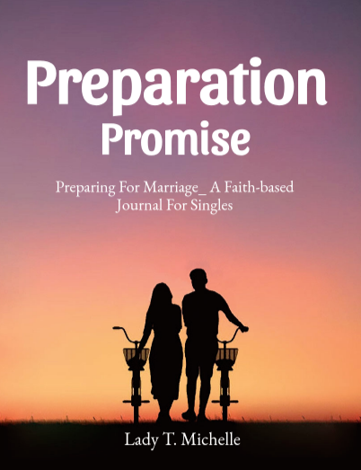
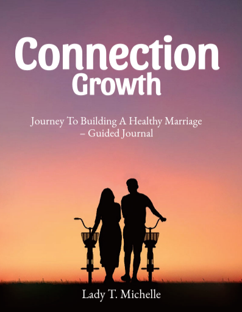
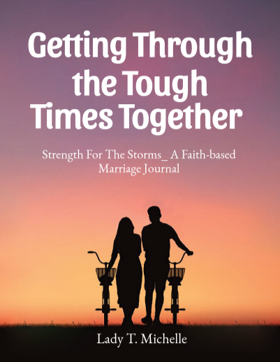

At His Feet
A 30-day prayer journey for covering your spouse through Scripture, guided prayer, reflection, and declarations.
Books, Devotionals & Faith-Based Resources
“Stronger Marriages Begin on Their Knees.” — Lady T. Michelle
Discover faith-filled books, devotionals, and marriage resources created to encourage spiritual growth, strengthen relationships, inspire healing, and lead hearts closer to God.
A 30-day prayer journey for covering your spouse through Scripture, guided prayer, reflection, and declarations.
A heartfelt Christian testimony of love, heartbreak, healing, and God’s mercy.
A powerful testimony of healing, restoration, and becoming God’s masterpiece through broken seasons.

A powerful Christian book that challenges believers to move beyond church activity and experience a deeper relationship with God’s presence.

All three faith-based marriage journals bundled together for preparation, growth, and restoration.

A faith-based journal designed to prepare singles for marriage God’s way.

A journal for couples building a healthy, God-centered marriage rooted in connection and purpose.

A faith-based guide to help couples navigate hard seasons with prayer, Scripture, and unity.
Whether you're seeking healing, strengthening your marriage, preparing for your future, or growing closer to God, we pray these resources encourage your walk with Christ.
As you grow through these resources, remember that you do not have to walk alone. We would be honored to pray with you.
Submit a Prayer RequestJoin our email list for encouragement, book updates, prayer resources, and faith-based marriage support.